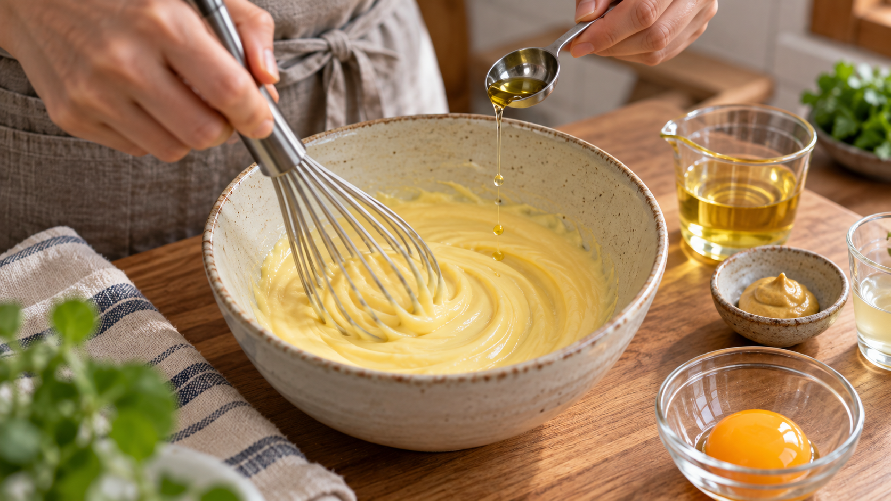

マヨネーズは、最初の油を急がない
卵黄へ油を入れ、泡立て器を動かす。
さっきまで黄色くなめらかだったのに、急に油が浮く。こうなると「混ぜ方が弱かった」と思いやすい。
でも、本当に見るべきなのは腕の速さだけではない。入ってくる油を細かく砕く速さと、その表面を卵黄が覆う速さが、間に合っているかだ。
マヨネーズ作りで油を少しずつ入れるのは、昔ながらの儀式ではない。小さな油滴を一つずつ守り、油と水が分かれない状態を育てるための操作だ。
今日の結論
泡立て器で作るなら、最初の30mLは小さじ1ずつ。油が見えなくなるまで混ぜてから、次を入れる。土台ができたら、残りは細い線で加える。
大事なのは「遅ければ遅いほどよい」ではない。混ぜる力に対して、油を入れる速さが上回らないことだ。
強い機械で細かく混ぜ続けられるなら、油をもっと速く入れられる場合もある。反対に、手で混ぜるときは、一度に大きな油だまりを作らないほうが成功しやすい。
マヨネーズの中では、油が水の中へ散っている
完成したマヨネーズは、見た目には一つのクリームだ。しかし、内側では小さな油滴が、卵黄や酢を含む水分の中へびっしり散っている。
水と油のように、そのままでは分かれるものを細かな粒にして保つ状態を乳化（エマルション）という。
泡立て器は油を小さな滴へちぎる。滴が小さくなるほど、油と水が接する面積は一気に広がる。その新しい境目へ、卵黄の成分が移動して薄い膜を作る。
卵黄で中心的に働くのが、たんぱく質と脂質が組み合わさった粒だ。油になじむ部分と水になじむ部分を持つため、油滴の表面へ広がり、隣の油滴と合体しにくくする。
たとえるなら、油を小さな荷物へ分け、卵黄の膜で一つずつ包む作業だ。荷物が一度に大量に届けば、包装が追いつかない。包まれていない油同士が集まり、大きな油だまりへ戻りやすくなる。
最初の油をゆっくり入れると、土台ができる
油を少し入れて混ぜると、油滴が生まれ、その表面へ卵黄の成分が広がる。見えていた油が消え、全体が均一になれば、次の油を受け入れる準備ができた合図だ。
この最初の段階では、まだ混合物の量が少ない。泡立て器が届く範囲も狭く、油を抱える仕組みも育っていない。ここで一気に油を注ぐと、泡立て器が水分側ではなく油だまりの中を回りやすくなる。
一方、油滴が増えてマヨネーズらしい粘りが出ると、混ぜる範囲が安定する。そこで初めて、油を細い線で加え続けられる。
大学で行われたマヨネーズの研究でも、油を入れる速さには上限があり、速すぎると油と水の位置関係がひっくり返って分離しやすいことが確認されている。また、最初の一部をゆっくり入れて土台を作ると、その後は速さを上げられた。
ここから分かるのは、「最後まで一滴ずつ」が正解なのではなく、最初に安定した油滴の集まりを作ることが、その後の余裕を生むということだ。
研究が示すのは、「速度」だけでなく組み合わせの問題
卵黄で安定させたマヨネーズ状の乳化物を調べた研究では、卵黄の量、混ぜる強さ、油を送る速さが、粘りや油滴の状態を変えた。条件によっては、油を速く送ったほうが弾力の強い仕上がりになった。
つまり、「油は遅く入れるほど細かくなる」と単純には言えない。強い装置なら、入ってくる油をすぐに砕き、境目へ卵黄の成分を行き渡らせられるからだ。
家庭へ導ける考察は明快だ。決まった秒数を守るより、自分の混ぜる道具が処理できる量だけを入れる。泡立て器なら小さじ1ずつから始め、ハンドブレンダーなら刃が水分側を捉え続けるようにする。
速さは数字だけで決めない。表面に透明な油が残る、泡立て器の周りだけが油っぽくなる、全体のつやが途切れる。こうした変化が出たら、油を止めて混ぜる合図だ。
今日の一皿：基本の手作りマヨネーズ
最初の30mLだけ丁寧に進め、その後は状態を見ながら細い線で加える。油が見えなくなる瞬間を観察すると、乳化の進み方が分かる。
材料（作りやすい量）
- 加熱殺菌済みの卵黄 1個分（約18g）
- 米油または菜種油 120mL
- 穀物酢 10mL
- ディジョンマスタード 5g
- 塩 1.5g
- 水 小さじ1〜2
生のまま仕上げるため、殻付きの生卵ではなく、表示を確認した加熱殺菌済みの卵黄または液卵を使う。
作り方
- ボウルの底へぬれ布巾を敷き、動かないようにする。卵黄、酢、マスタード、塩を入れ、泡立て器で均一になるまで混ぜる。
- 油30mLを小さじ1ずつ加える。1回ごとに、透明な油の筋が見えなくなり、全体がつやのある黄色へ戻ってから次を入れる。
- とろみが出たら、残りの油を細い線で加える。片手で絶えず混ぜ、表面に油が残ったら注ぐのを止める。
- 泡立て器が重くなり、油が混ざりにくくなったら、水を小さじ1加えて混ぜる。状態を見て、もう小さじ1まで加える。
- 全体がなめらかになったら清潔な容器へ移し、すぐ冷蔵する。家庭の手作り品は保存試験をしていないため、少量を作って早めに使い切る。
水を途中で足すのは、味を薄めるためだけではない。油滴が散る場所である水分側を広げ、泡立て器が油を細かく分けやすい状態へ戻すためだ。
もし油が浮いたら、混ぜ続けるより土台を作り直す
透明な油が大きく浮き、混ぜても戻らなくなったら、同じボウルで力を足し続けない。
別のボウルへ加熱殺菌済み卵黄を少量入れ、分離したマヨネーズを小さじ1ずつ加えて混ぜる。新しい水分側と卵黄の膜を用意し、分離した油をもう一度、小さな滴として受け入れる。
これは失敗を隠す方法ではない。包装が追いつかなくなった油を、新しい作業台へ少しずつ戻す考え方だ。
日常へ広げるなら、ドレッシングも「先に土台」を作る
同じ考え方は、ごまドレッシング、シーザー風ドレッシング、練りごまを使うたれにも使える。
最初に酢、しょうゆ、マスタードなど水分側の材料を均一にし、油や練りごまを少しずつ入れる。途中で急に重くなったら、水分を少量足す。順番を変えるだけで、材料を増やさなくてもなめらかさを保ちやすくなる。
買い物では、「乳化剤」という名前だけを探す必要はない。卵黄、マスタード、大豆、牛乳のたんぱく質など、油と水の境目へ集まりやすい材料は身近にある。ただし、それぞれ働く条件は違うため、どの料理でも同じ量で置き換えられるわけではない。
そして、機械を使う料理では「油を少しずつ」が絶対条件ではない。強い混ぜ方なら速く処理できる。覚えるべきなのは速さではなく、入れる量を、混ぜる力と膜を作る材料に合わせることだ。
まとめ
マヨネーズは、油を水分の中へ小さな滴として散らし、卵黄の成分でその表面を守った料理だ。
油を一度に入れると、手で混ぜる力では滴を作る作業と膜を作る作業が追いつかない。だから、最初の30mLは小さじ1ずつ進める。
ただし、遅いほどよいわけではない。土台ができ、道具が油を処理できるなら、その後は細い線へ速さを上げてよい。
油が見えなくなってから次を入れる。
時計より、この一つの合図を見たほうが、マヨネーズは安定する。
参考文献
- Dauphas S, Beaumal V, Riaublanc A, Anton M. Hen egg yolk low-density lipoproteins film spreading at the air-water and oil-water interfaces. J Agric Food Chem. 2006;54(10):3733-3737. https://doi.org/10.1021/jf053174e
- Bengoechea C, López ML, Cordobés F, Guerrero A. Influence of Semicontinuous Processing on the Rheology and Droplet Size Distribution of Mayonnaise-like Emulsions. Food Sci Technol Int. 2009;15(4):367-373. https://doi.org/10.1177/1082013209345046
- Miyagawa Y, Nakagawa K, Fujita H, Adachi S. Effects of Sodium Chloride and Acetic Acid Concentrations on Dispersion Stability of Mayonnaise. J Oleo Sci. 2019;68(10):1027-1032. https://doi.org/10.5650/jos.ess19161
- Widerström E, Öhman R. Mayonnaise: Quality and Catastrophic Phase Inversion. Lund University; 2017. https://www.lunduniversity.lu.se/publication/8916120
- U.S. Food and Drug Administration. Assuring the Safety of Eggs and Menu and Deli Items Made From Raw, Shell Eggs. https://www.fda.gov/food/retail-food-industryregulatory-assistance-training/assuring-safety-eggs-and-menu-and-deli-items-made-raw-shell-eggs
※家庭向けの分量と「最初の30mLを小さじ1ずつ」という手順は、研究で確認された乳化の仕組みと油の投入速度の影響から導いた実用的な目安であり、道具、卵黄製品、油の種類で混ぜやすさは変わる。